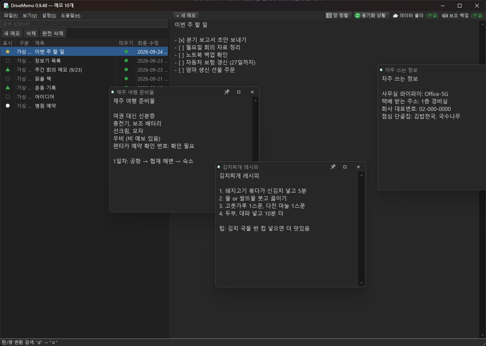
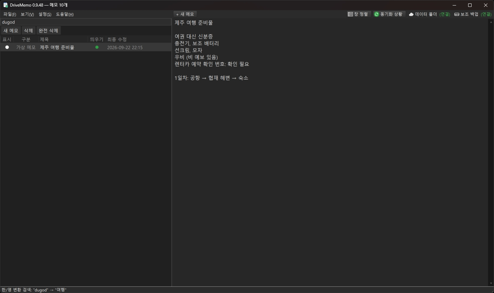

DriveMemo
집 PC, 회사 PC, 노트북에서 같은 메모를 쓰는 가벼운 윈도우 메모장 A lightweight Windows notepad that keeps the same notes on your home PC, work PC and laptop
{kind=link}

- 저장 버튼 없이 자동 저장
- Saves automatically — no save button
- 구글 드라이브로 여러 PC 동기화
- Syncs across PCs through Google Drive
- 설치·회원 가입 없음, exe 하나
- No installer, no account — a single exe
- 한/영 실수도 찾아 주는 전체 검색
- Full-text search
- 메모를 별도 창으로 띄우기
- Pop notes out into their own windows
- 여러 메모 합치기
- Merge several notes into one
- 일반 txt 파일도 열어서 편집
- Opens and edits plain .txt files
- 밝은 / 어두운 테마
- Light and dark themes
- 가볍고 빠름 (약 250KB)
- Small and fast (about 250 KB)
- 더 보기…More…
DriveMemo 0.9.53 다운로드download
DriveMemo's interface is currently in Korean only.
이런 분께 추천합니다Who is it for?
- 집과 회사에서 같은 메모를 보고 고치고 싶은 분
- 메모장에 적어 두고 저장을 깜빡해서 날려 본 분
- 메모 앱은 무겁고, 윈도우 메모장은 너무 단순하다고 느끼는 분
- You want to read and edit the same notes at home and at work
- You've lost text in Notepad because you forgot to save
- Note-taking apps feel heavy, but Windows Notepad feels too bare
어떻게 동기화되나요?How does syncing work?
메모를 구글 드라이브 폴더에 평범한 텍스트 파일로 저장합니다. 각 PC에 Google Drive 데스크톱 앱이 깔려 있으면, 다른 PC에서 고친 메모가 몇 초 안에 반영됩니다. 별도 서버나 회원 가입은 없고, 메모는 내 PC와 내 구글 드라이브에만 있습니다.
Notes are saved as plain text files in a Google Drive folder. With the Google Drive desktop app on each PC, a change made on one PC shows up on the others within seconds. There is no server and no sign-up — your notes live only on your PC and in your own Google Drive.
검색Search
한/영 전환을 깜빡하고 쳐도 찾아 줍니다. (dugod → 여행)
Search every note at once. Jump between matches with Enter / Shift+Enter.
